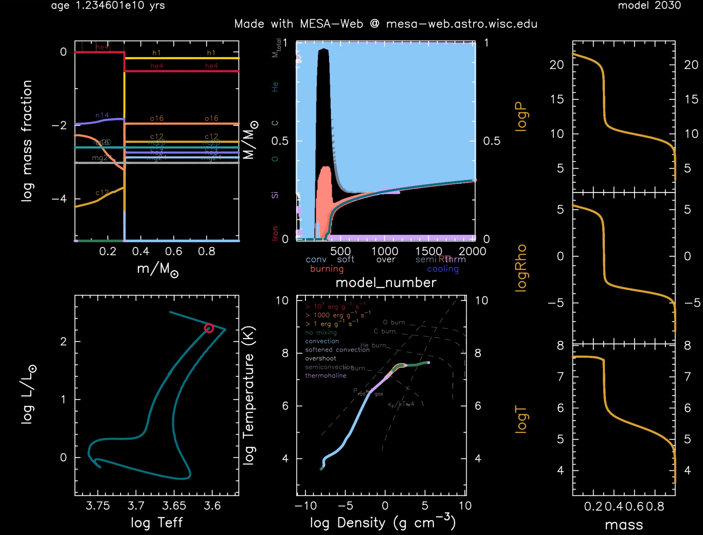
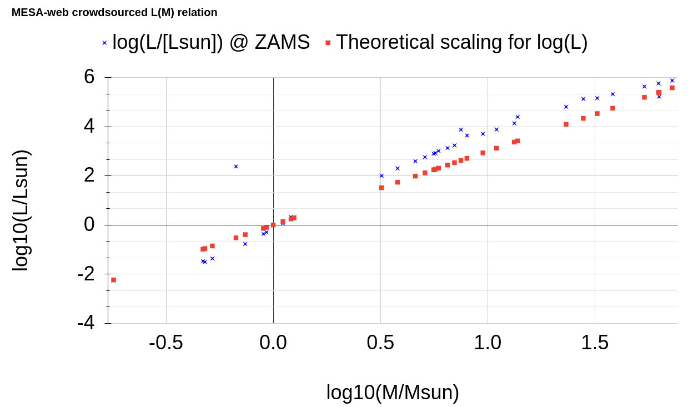

Materials: Onno Pols' lecture notes Chapters 7-9-11, Kippenhahn's book Chapters 22-24, 26-33, Hansen, Kawaler, Trimble book, Chapter 2, MESA-web.
In class activity: evolution of stars
Aims
In this class activity, you will work together in groups to piece
together all the things we have learned so far and describe the
evolution of single non-rotating stars with your MESA-web models!
The aim is for you to be able to:
- distinguish physical features from numerical artifacts
- give a physical explanation for the features of the evolution of the star (e.g., on the HR diagram), based on the interior structure and evolution
- appreciate the timescales corresponding to the various features
- being able to describe and explain the qualitative differences between stars of different masses (and maybe even metallicity!)
This is often what we do with stellar models in research: we setup a numerical experiment on the computer (in this case a crowdsourced grid of many masses across the class), and then look at the results with a copious dose of healthy skepticism and trying to filter out the numerical artifacts from physical features of the models to build understanding!
Brief description of pgstar movies created by MESA-web
Since you downloaded your models from MESA-web, it makes sense to
start trying to understand your model using the *.mp4 movie it
produces for you.

MESA-web generated movie for the evolution of a 1M☉ star.
There is a lot going on here! Below I describe the panels in the
movies produced by MESA-web. Note the clock for physical time on the
very top left, and the number of timestep marked on the top right.
N.B.: if you set up a full blown MESA installation you can customize all of these!
N.B.: large excursions on a plot can take a very short physical time (but a long computational time and many timesteps), viceversa long-duration phases may take few large timesteps and not produce large variations on these plots! This is a manifestation of the fact that timesteps are adaptive and the code always tries to take the biggest timestep possible within the numerical constraints set by the user.
Top right panel: abundance panel
This shows \(\log_{10}(X_{i})\) with \(X_{i}\) the mass fraction of the $i$-th isotope as a function of mass coordinate (\(m=0\) is the center, \(m=M\) the surface).
Bottom right panel: HR diagram
Showing absolute bolometric luminosity vs. effective temperature on a log-log scale with the x-axis increasing leftward. N.B.: This shows the evolutionary track of one star as a function of time.
Middle top panel: Kippenhahn diagram
This shows the internal mixing processes and the energy generation as a function of "time" (on the x-axis) and mass coordinate (y-axis): each vertical line is effectively a snapshot of the internal structure of the star at fixed time, the bottom is the center, and the top is the surface.
Light blue indicates regions of the star where there is convection, white shows convective boundary mixing (a.k.a. "overshooting",) purple indicates thermohaline mixing, gray (if any) indicates semiconvection. Red regions (which can be hidden behind the mixing) indicate \(\varepsilon_\mathrm{nuc}>0\), dark blue region indicate regions of strong neutrino cooling (\(\varepsilon_{\nu} \ge \varepsilon_\mathrm{nuc}\)). Some lines plotting \(M_\mathrm{tot}\), and mass of the Helium, CO etc. cores may also be plotted.
The x-axis here is actually the timestep number. N.B.: \(\Delta t_{n}\) can vary a lot with \(n\), so this is not a linear mapping between physical time and timestep number!
Middle bottom panel: \(T(\rho)\)
Annotated log-log plot of the temperature and density. The line color indicates mixing at that location in the star, the yellow/orange/red outline indicates the level of energy generation. This is also a snapshot of the star structure at fixed time (in each frame of the movie).
The annotations indicate regions of \(\Gamma<4/3\) (⇒ dynamical instability), full degeneracy (\(\Rightarrow \varepsilon_\mathrm{Fermi}\simeq 4 k_{B}T\)), and \(T(\rho)\) lines corresponding to the ignition of various fuels.
Right panel: various profiles
These three panels show \(P\), \(\rho\), and \(T\) as a function of Lagrangian mass coordinate.
Mass-luminosity relation revisited with models
We have already discussed empirical \(L \equiv L(M)\) relations based on dynamical mass measurements in SB2 eclipsing binaries, and you have derived an analytic relation for fully radiative stars (see homework on radiative energy transport). Let's now see if our models agree and if we can understand why if they don't!
Find the zero age main sequence (ZAMS) of your stars, as in the point where gravothermal equilibrium is achieved and \(L_\mathrm{nuc} = L\) thanks to hydrogen core burning and report on this spreadsheet your mass and luminosity at that point.
Hint: A very simple approximate criterion we can adopt here is
center_h1 ≤ 99% center_h1 at the beginning of the evolution: this
imposes that a small amount of hydrogen has burned, enough to
establish equilibrium, but we are still very close to a homogeneous
initial stellar structure. You can find the variable center_h1 in your
trimmed_history.data, in which every line contains a timestep.

MESA-web results. Deviations at large and small masses (related to violations of the theoretical assumptions) are expected.The red dots here correspond to \(\log_{10}[(M/M_{☉})^{3}]\), the \(L(M)\) relation that can be obtained assuming hydrostatic equilibrium and purely radiative energy transport. Despite this assumption, which is not verified for most of the stars, the agreement between these relations is not bad! We can barely notice two expected significant deviations:
- at low masses we have a steepening of the relation: the portion of these stars being convective is progressively larger. Assuming fully convective transport of energy (i.e., assuming an adiabatic temperature gradient), one can in fact derive \(L(M) \propto M^{4}\), steeper than the theoretical scaling represented here
- at the high masses we have a flattening: this is because for very massive stars their luminosity \(L \rightarrow L_\mathrm{Edd}\propto M\), therefore we expect a progressive flattening until \(L(M)\propto M\). This may also be implicated in the discussion for what is the maximum mass of a star.
Discuss with your "mass" group
Compare your model to the models of people nearby you and explore the
data you have. You probably want to start from the movie MESA-web
provides. Likely, you will need to play the movie over and over,
pausing it, and trying to correlate what happens in the various panels
to build physical understanding. If needed, you can also make more
plots (of trimmed_history.data and any profile*.data file available,
remember the python module available to read the data: mesa_web.py).
N.B.: See also the output description on the MESA-web site.
Pay attention to:
- timescales and timestep size
- HR diagram
- behavior on the \(T(\rho)\) diagram
- composition (at surface and core)
- Kippenhahn diagram
Some guiding questions for inspiration
- where does the evolution start?
- what is the energy source providing the luminosity L before significant nuclear burning occurs?
- when does (significant) nuclear burning start? How long between the start of the run and the beginning of nuclear burning (in physical time)?
- where does H run out in the core? How long does the H-core burning main sequence last?
- what is the structure of the star during H core burning (core vs. envelope). and why?
- can you physically explain the behavior of L, R, and Teff during the hydrogen core burning main sequence phase?
- can you explain the morphology of the end of the H-core burning main sequence?
- where does He core burning start?
- is there any other nuclear burning during He core burning? And before?
Clean examples
Because MESA-web is a simple configuration meant for didactic
applications, it may produce in certain configurations a lot of
numerical noise. See here (scroll down to "Stellar Evolution Videos")
some clean examples for a representative low-mass star (\(1M_{☉}\)), high
mass star (\(15M_{☉}\)). These were also produced with MESA, but likely
configured differently than MESA-web.
Spoiler alert: find here some (partial) discussion of the evolution of stars of various mass.